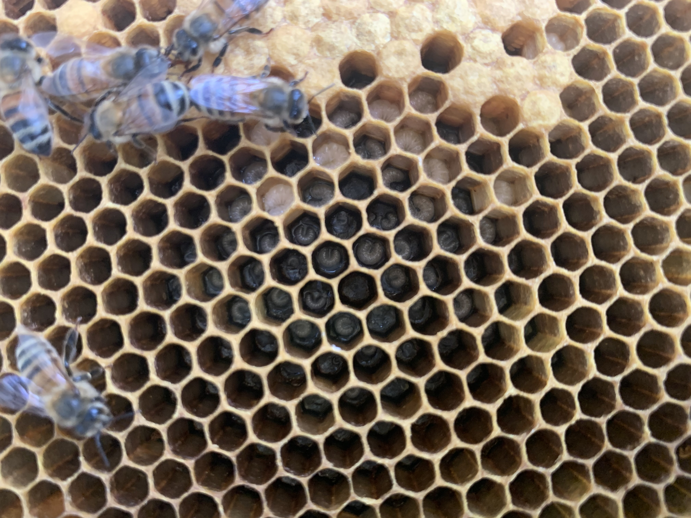

Beekeeping mentorship & apiary services
The Alleman Apiary offers hands-on beekeeping mentorship, hive inspections, varroa mite management, and apiary consulting for new and developing beekeepers throughout Central Pennsylvania. We're working beekeepers with 10+ years in the field, not classroom instructors. We teach the way we learned: open the hive, look at what's actually happening, and work through the decisions together.
Who we help
Brand-new beekeepers
Just got (or are about to get) your first hive and want someone to walk you through the first season — the most critical year for whether you stay in beekeeping or quit.
Year-2 and year-3 beekeepers
You survived the first winter but feel like you're guessing on every decision. Most of beekeeping's hardest lessons happen in years two and three.
Backyard beekeepers
You manage 1–3 hives, want to keep them healthy, and would rather have an experienced beekeeper look over your shoulder than rely on YouTube videos and conflicting forum advice.
Established beekeepers with specific challenges
Chronic varroa pressure, queen problems, swarming issues, winter losses — you want a second set of eyes and a treatment plan.
Mentorship & education services
Hands-on hive walkthroughs
We come to your hives. We open them with you. We work through what we're seeing — eggs, larvae, capped brood, queen status, honey stores, mite levels, disease signs, equipment condition. You learn by doing, not by watching a slideshow. Most new beekeepers gain more in one in-hive session than from a month of reading books.
First-year beekeeper mentorship
A structured mentorship program for new beekeepers. We work alongside you through the first full season — from installing your first nuc, through spring buildup, summer maintenance, varroa management, fall preparation, and getting the colony through winter. The single biggest predictor of long-term beekeeping success is having a mentor in the first year. We do this because most new beekeepers don't make it to year two without one.
Equipment setup & site selection
If you're just getting started, we help with the things you can't easily figure out from a beginner book — hive placement on your specific property, how many hives to start with, what equipment is actually worth buying vs. what's marketing fluff, where to source local bees, and how to set up your operation so it's manageable over time.
Varroa monitoring & treatment training
Varroa mite management is the single biggest skill gap in modern beekeeping. We teach how to do alcohol washes, sugar rolls, and CO2 testing — the actual sampling methods that tell you what your mite load is. Then we walk through treatment options (formic acid, oxalic acid vapor, oxalic dribble, thymol-based products) and when each one is appropriate. Most beekeepers who lose hives lose them to varroa-related issues.
Swarm prevention & management
If your hives are swarming, you're losing your bees and your honey production. We work through swarm prevention strategies — making splits, providing space, queen management — and what to do if you've already got swarm cells.
Apiary consulting for established beekeepers
A second set of eyes on a struggling operation. We come out, do a full inspection of every hive, identify what's going wrong, and lay out a corrective plan. Useful when you're seeing chronic issues, repeated winter losses, queen problems you can't solve, or you've expanded faster than your knowledge and need to catch up.

Common questions from new beekeepers
These are the questions we hear most often. If any of these sound like you, we should talk.
- "I just got my first hive and I don't know what I'm supposed to be looking at when I open it."
- "My bees seem fine, but I have no idea if I should be treating for mites and how."
- "I lost both of my hives last winter — what did I do wrong?"
- "My hive is queenless / queen-right but not laying / has laying workers — what do I do?"
- "I think my hive is going to swarm but I don't know how to stop it."
- "I want to expand to more hives but I don't want to make the same mistakes."
- "My honey production has dropped and I can't figure out why."
These are normal beekeeping problems. They have answers. We help.
How mentorship works
- Call or text 717-379-3248 with a quick description of where you are in beekeeping (brand new, year 2, struggling with X, etc.) and what you're hoping to learn or solve.
- We talk through what makes sense — a single in-hive session, ongoing first-year mentorship, varroa training specifically, or a full apiary consult. There's no one-size-fits-all package.
- We schedule the session(s). Most mentorship is at your hives, on your property, on your equipment. We can also meet at our apiary if you don't have hives yet and want to see how a working operation runs.
- We follow up. Beekeeping questions don't fit into one session. Ongoing phone/text support is part of the deal.
How we price
Mentorship and consulting are quoted based on what you actually need. A single hands-on hive session is priced differently than a season-long mentorship or a full apiary consult. Call or text 717-379-3248 with your situation and we'll give you a straight number — no packages designed to upsell you into things you don't need.
For new beekeepers who buy nucs from us, we discount mentorship significantly. The two go together.
Where we work
We provide hands-on apiary services throughout Dauphin, Cumberland, Lebanon, and York Counties — including Harrisburg, Paxtang, Penbrook, Steelton, Highspire, Middletown, Hummelstown, Hershey, Palmyra, Annville, Cleona, Lebanon, Grantville, Linglestown, Colonial Park, Susquehanna Township, Lower Paxton, Camp Hill, Mechanicsburg, Lemoyne, New Cumberland, Wormleysburg, Enola, Marysville, Halifax, Millersburg, Elizabethtown, Mount Joy, Mount Wolf, Manchester, Dillsburg, Carlisle, Boiling Springs, and surrounding Central Pennsylvania communities. For locations outside this range, ask — we sometimes travel further for established operations or multi-day consulting.
Mentorship FAQ
Do you teach group classes?
Not formally. We focus on one-on-one or small-group hands-on mentorship at the hives — that's what actually transfers skill. For classroom-style instruction, the Capital Area Beekeepers Association (CABA) and Penn State Extension both run good intro classes that we frequently recommend as a starting point. Our role picks up where the classroom ends.
I bought my first hive but I'm scared to open it. Can you help?
Yes. This is the most common starting point. We come out, open the hive together, walk through what we're seeing, and by the end you'll be doing the inspection yourself. The fear goes away with experience — and we shortcut you to the experience.
Do you sell beekeeping equipment?
We have starter equipment available for clients we mentor — basic hive setups, suits, smokers, hive tools. We're not a full bee supply store. For broader equipment needs we recommend Mann Lake, Dadant, or Brushy Mountain. We'll tell you what's worth buying and what's not.
What if I don't know what I don't know?
That's the most honest thing a new beekeeper can say. Call us. We'll ask you a few questions about your setup and where you are, and from those answers we usually know exactly what's about to bite you in the next month or two. The first conversation is free.
Can you mentor me if I'm not nearby?
For hands-on hive work, no — beekeeping mentorship really requires being in the hive together. For phone/video consulting on specific problems (queen issues, varroa interpretation, treatment plans), we sometimes work with beekeepers outside our service area on a case-by-case basis.
Do you work with sideliners and small commercial operations?
Yes. We've consulted for sideliner and small-scale commercial operators on apiary expansion, queen rearing setup, and integrated pest management. Different scale, different problems, but the underlying biology is the same.
Let's get you in a hive
The first conversation is free. We'll figure out what kind of help you actually need.
Call or Text 717-379-3248